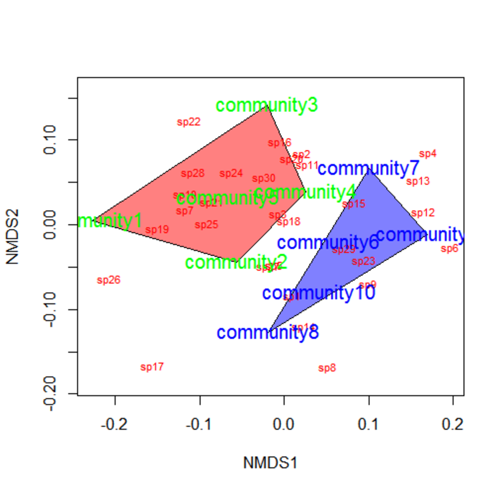
Guest lecture for Dr. Drew Gronewold’s class EAS 501.077 Multivariate Statistics for Environmental Science in 2023 Fall.
Objectives
- Compare parametric and nonparametric methods for ordination
- Learn about real-life applications of NMDS
- Practice using NMDS in R to analyze community composition
- Get familiar with a statistical test, PERMANOVA
Parametric or nonparametric?
In previous classes, we have learned about principal component analysis (PCA).
PCA have certain assumptions, requiring the data to be * continuous, * linear, * normally distributed.
Note that PCA involves calculating the Euclidean distances in the multidimensional space between samples.
What if our data are * discrete (e.g., presence/absence, category), * nonlinear (e.g., day of year, precipitation), * not normally distributed (e.g., count of rare species)?
Does Euclidean distance still make sense?
“Nonparametric statistics is the type of statistics that is not restricted by assumptions concerning the nature of the population from which a sample is drawn.”
Quote from Wikipedia.
PCA is a parametric method for ordination. Today, we are going to add a nonparametric method into our toolbox: non-metric multidimensional scaling (NMDS).
NMDS places samples that are more “similar” to each other closer in a low-dimensional space.
Advantages of NMDS include * accommodating multiple types of data, * being used with different measures of dissimilarity.
However, be aware of the differences with PCA. Unlike principle components in PCA, the axes in NMDS do not carry a specific meaning.
Applications of NMDS
Case 1: Phytoplankton community composition (Paper)
Tropical urban reservoirs face the problem of phytoplankton bloom, often dominated by toxic cyanobacteria. It has been hypothesized that macrophytes (water plants) can inhibit phytoplankton, presenting an opportunity for reservoir restoration.

In reservoirs in Singapore, we conducted a series of experiments to test macrophytes’ ability to alter phytoplankton communities and facilitate reservoir restoration.
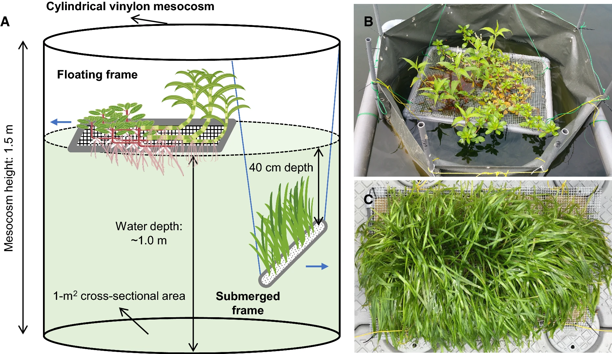
Sim et al. (2021) Fig. 1
Apart from the effect of macrophytes on phytoplankton biomass, we also care about the effects on phytoplankton community composition.
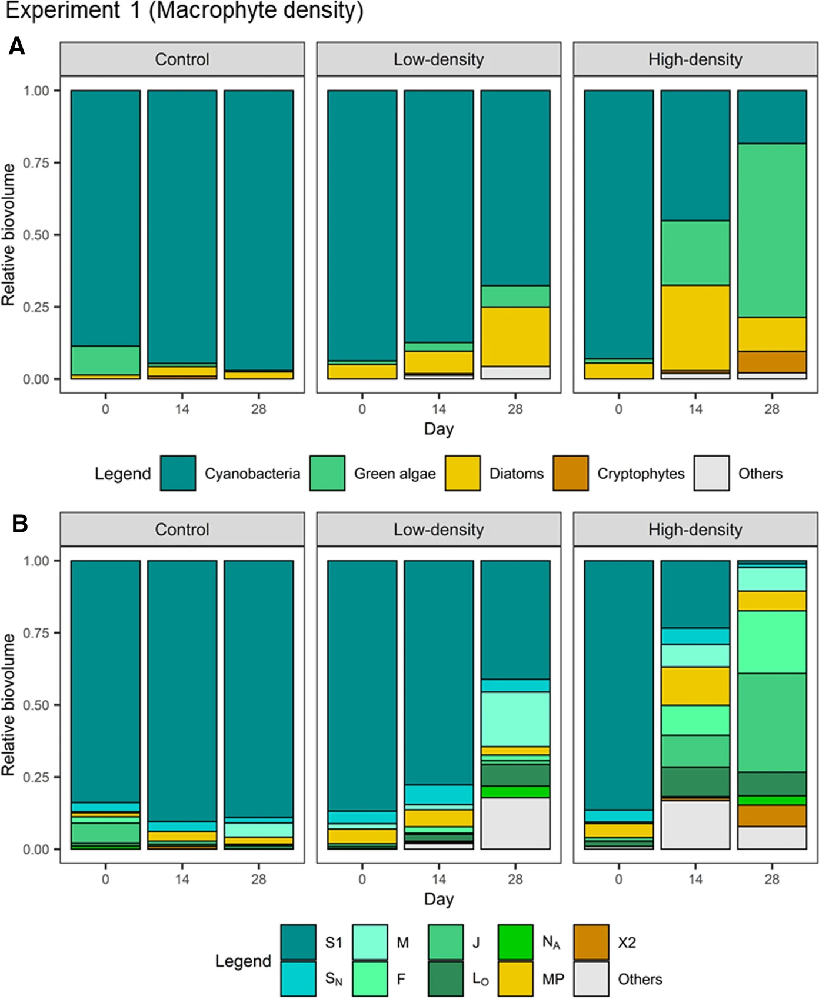
Sim et al. (2021) Fig. 3
Community composition data is essentially multivariate. The (relative) abundance of each taxa is a variable, and there are usually many taxa. How do we analyze the response of all these variables together?
We used NMDS to visualize the effect of macrophyte treatment on phytoplankton community composition.
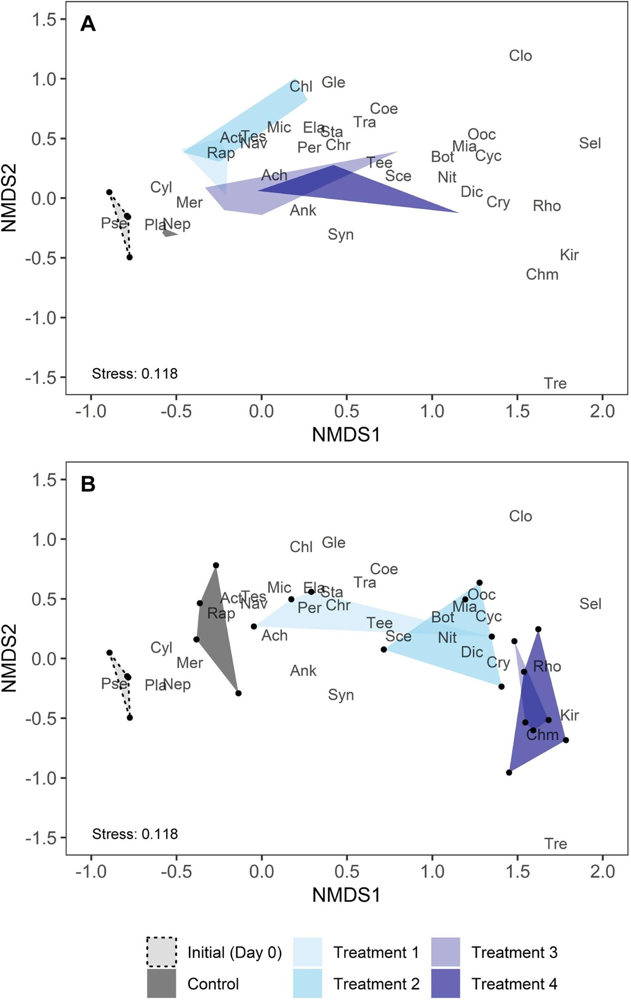
Mowe et al. (2019) Fig. 6
Here we see how the introduction of macrophyte caused a shift in phytoplankton community composition, with the shift being greater as density of macrophyte increased.
Case 2: Grassland taxonomic, phylogenitic, and functional trait composition (Paper)
The trajectory of early succession communities is shaped by the plant phylogenetic and trait history. Teasing apart these two processes has important implications for restoration.
Holding starting species richness constant, Karimi et al. planted communities of different phylogenetic diversity (PD) and functional trait diversity (FD).

Karimi et al. (2021) Fig. 4
Similar to case study 1, they examined how different treatments drive differences in community composition. Apart from taxonomic composition, they also analyzed responses in phylogenetic and functional trait composition.
I highlight this study because they used a combination of data types to characterize composition.
“Functional diversity was assessed using 12 continuous leaf traits, 6 categorical traits, 8 binary root traits, seed mass, a categorical habitat moisture trait and genome size.”
They also used NMDS to study changes in the three kinds of community composition.
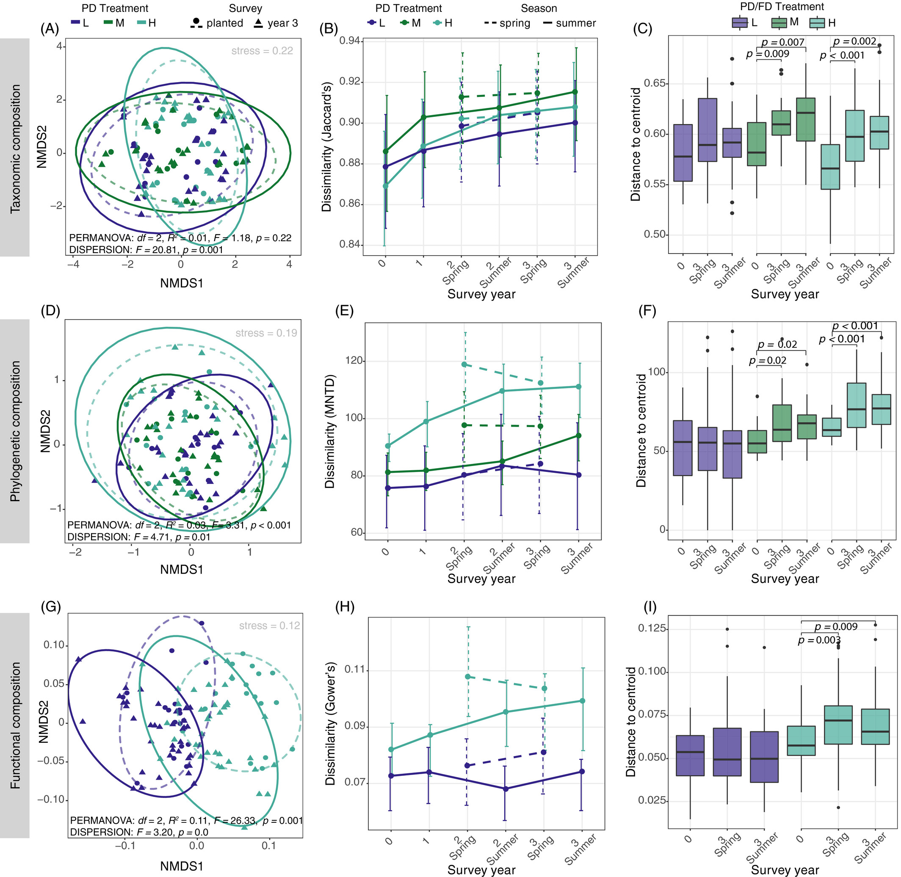
Karimi et al. (2021) Fig. 4 (Note their dissimilarity measures.)
Here, we see that the PD treatment increased the dispersion of taxonomic and phylogenetic composition between communities (increased beta diversity) and caused directional shifts in functional trait composition (convergence).
Hands-on community composition analysis
There are really good NMDS tutorial1 tutorial 2 which I encourage you to try at home. Here I give another example with real-life data and some other visualization options.
Background: The National Ecological Observatory Network (NEON) collects ecological and biogeochemical data with standardized protocols across 81 field sites across the United States. The Woody Plant Vegetation Structure dataset (DP1.10098) describes the structure and composition of woody vegetation through the mapping, identification, and measurement of free-standing woody plants including trees, saplings, shrubs, lianas, etc.
We have downloaded NEON vegetation structure data at one site, Bartlett Experimental Forest (BART), for you to analyze the composition of woody vegetation. Please download them here.
Read in some data frames.
dat <- read_rds("data.rds")
df_tree <- dat$vst_apparentindividual %>%
arrange(desc(publicationDate)) %>%
distinct(plotID, individualID, .keep_all = T) %>%
filter(str_detect(plantStatus %>% tolower(), "live")) %>%
select(plotID, individualID)
df_tree_sp <- dat$vst_mappingandtagging %>%
arrange(desc(publicationDate)) %>%
distinct(individualID, plotID, .keep_all = T) %>%
select(individualID, plotID, taxonID, scientificName) %>%
filter(!is.na(taxonID)) %>%
filter(taxonID != "2PLANT")
df_plot <- dat$vst_perplotperyear %>%
arrange(desc(publicationDate)) %>%
distinct(plotID, plotType, .keep_all = T) %>%
select(plotID, plotType, nlcdClass, lon = decimalLongitude, lat = decimalLatitude)Join the data frames. Each row is an individual tree (with unique individualID). Feel free to explore this dataset.
df <- df_tree %>%
inner_join(df_tree_sp,
by = c("individualID", "plotID")
) %>%
inner_join(df_plot,
by = c("plotID")
)
df %>% head(10) plotID individualID taxonID scientificName
1 BART_075 NEON.PLA.D01.BART.03230 FAGR Fagus grandifolia Ehrh.
2 BART_075 NEON.PLA.D01.BART.04011 FAGR Fagus grandifolia Ehrh.
3 BART_036 NEON.PLA.D01.BART.04548 FAGR Fagus grandifolia Ehrh.
4 BART_075 NEON.PLA.D01.BART.04702 TSCA Tsuga canadensis (L.) Carrière
5 BART_075 NEON.PLA.D01.BART.03257 FAGR Fagus grandifolia Ehrh.
6 BART_075 NEON.PLA.D01.BART.03148 FAGR Fagus grandifolia Ehrh.
7 BART_075 NEON.PLA.D01.BART.03254 FAGR Fagus grandifolia Ehrh.
8 BART_075 NEON.PLA.D01.BART.04703 ACPE Acer pensylvanicum L.
9 BART_036 NEON.PLA.D01.BART.04554 FAGR Fagus grandifolia Ehrh.
10 BART_075 NEON.PLA.D01.BART.03300 BEAL2 Betula alleghaniensis Britton
plotType nlcdClass lon lat
1 tower mixedForest -71.28649 44.05914
2 tower mixedForest -71.28649 44.05914
3 tower deciduousForest -71.28588 44.06208
4 tower mixedForest -71.28649 44.05914
5 tower mixedForest -71.28649 44.05914
6 tower mixedForest -71.28649 44.05914
7 tower mixedForest -71.28649 44.05914
8 tower mixedForest -71.28649 44.05914
9 tower deciduousForest -71.28588 44.06208
10 tower mixedForest -71.28649 44.05914Process the joined data frame to get a community composition data frame. Each row is a community (a plot). Species names are now columns.
df_comm <- df %>%
group_by(plotID, plotType, nlcdClass, lat, lon, scientificName) %>%
summarise(count = n()) %>%
ungroup() %>%
spread(key = "scientificName", value = "count", fill = 0)
df_comm %>% head(10)# A tibble: 10 × 36
plotID plotType nlcdClass lat lon `Abies sp.` Acer pensylvanicum L…¹
<chr> <chr> <chr> <dbl> <dbl> <dbl> <dbl>
1 BART_001 distributed mixedFor… 44.0 -71.3 0 2
2 BART_002 distributed deciduou… 44.0 -71.3 0 6
3 BART_003 distributed deciduou… 44.1 -71.3 0 0
4 BART_004 distributed mixedFor… 44.0 -71.3 0 1
5 BART_005 distributed mixedFor… 44.1 -71.3 1 0
6 BART_006 distributed deciduou… 44.1 -71.3 1 6
7 BART_007 distributed mixedFor… 44.0 -71.3 0 0
8 BART_010 distributed deciduou… 44.1 -71.3 0 0
9 BART_011 distributed mixedFor… 44.1 -71.3 0 0
10 BART_012 distributed deciduou… 44.0 -71.3 0 0
# ℹ abbreviated name: ¹`Acer pensylvanicum L.`
# ℹ 29 more variables: `Acer rubrum L.` <dbl>, `Acer saccharinum L.` <dbl>,
# `Acer saccharum Marshall` <dbl>,
# `Acer saccharum Marshall var. saccharum` <dbl>, `Acer sp.` <dbl>,
# `Betula ×caerulea Blanch. var. caerulea` <dbl>,
# `Betula alleghaniensis Britton` <dbl>, `Betula lenta L.` <dbl>,
# `Betula papyrifera Marshall` <dbl>, …We need to make this community composition data frame a matrix. Again, each row is a community (a plot) and each species is a column. Note that we leave out the metadata for plots.
mat_comm <- df_comm %>%
select(-plotID, -plotType, -nlcdClass, -lon, -lat) %>%
as.matrix()
mat_comm[1:6, 1:6] Abies sp. Acer pensylvanicum L. Acer rubrum L. Acer saccharinum L.
[1,] 0 2 1 0
[2,] 0 6 0 0
[3,] 0 0 15 0
[4,] 0 1 5 0
[5,] 1 0 0 0
[6,] 1 6 0 0
Acer saccharum Marshall Acer saccharum Marshall var. saccharum
[1,] 0 1
[2,] 0 22
[3,] 0 7
[4,] 0 0
[5,] 0 0
[6,] 0 2With this community composition matrix, we can use the metaMDS function in vegan package to perform NMDS.
set.seed(1)
mds_comm <- vegan::metaMDS(mat_comm, distant = "bray", k = 4, try = 100)Square root transformation
Wisconsin double standardization
Run 0 stress 0.08885463
Run 1 stress 0.09016598
Run 2 stress 0.08885805
... Procrustes: rmse 0.00397431 max resid 0.01364567
Run 3 stress 0.08885508
... Procrustes: rmse 0.0001215631 max resid 0.0004105488
... Similar to previous best
Run 4 stress 0.08885586
... Procrustes: rmse 0.0003292734 max resid 0.001099849
... Similar to previous best
Run 5 stress 0.0903252
Run 6 stress 0.08885492
... Procrustes: rmse 0.0001005969 max resid 0.0003412662
... Similar to previous best
Run 7 stress 0.08885847
... Procrustes: rmse 0.004096719 max resid 0.01408031
Run 8 stress 0.08885396
... New best solution
... Procrustes: rmse 0.002743248 max resid 0.00947331
... Similar to previous best
Run 9 stress 0.09029896
Run 10 stress 0.09034585
Run 11 stress 0.08893074
... Procrustes: rmse 0.009504952 max resid 0.03165667
Run 12 stress 0.09032054
Run 13 stress 0.08885345
... New best solution
... Procrustes: rmse 0.002182506 max resid 0.007588686
... Similar to previous best
Run 14 stress 0.08889528
... Procrustes: rmse 0.005338802 max resid 0.01761426
Run 15 stress 0.08886069
... Procrustes: rmse 0.003999398 max resid 0.01384676
Run 16 stress 0.08885448
... Procrustes: rmse 0.0005095852 max resid 0.001713473
... Similar to previous best
Run 17 stress 0.09028926
Run 18 stress 0.08886793
... Procrustes: rmse 0.005178257 max resid 0.0181378
Run 19 stress 0.08885554
... Procrustes: rmse 0.002771664 max resid 0.009498437
... Similar to previous best
Run 20 stress 0.09016291
*** Best solution repeated 3 timesmds_comm
Call:
vegan::metaMDS(comm = mat_comm, k = 4, try = 100, distant = "bray")
global Multidimensional Scaling using monoMDS
Data: wisconsin(sqrt(mat_comm))
Distance: bray
Dimensions: 4
Stress: 0.08885345
Stress type 1, weak ties
Best solution was repeated 3 times in 20 tries
The best solution was from try 13 (random start)
Scaling: centring, PC rotation, halfchange scaling
Species: expanded scores based on 'wisconsin(sqrt(mat_comm))' We check the stress value to find out if our NMDS has a good fit. We can also make a stressplot.
mds_comm$stress[1] 0.08885345vegan::stressplot(mds_comm)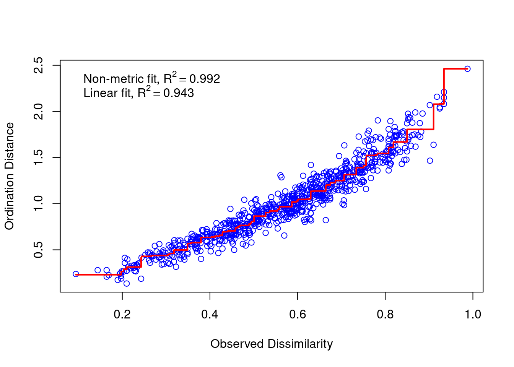
Is our stress value considered good? A rule of thumb is that stress < 0.1 is good and stress < 0.05 is excellent. You can increase the number of dimensions (k) to reduce stress. However, large k is usually not useful and can even be harmful.
For more considerations, read this chapter.
Now we can generate a basic NMDS plot. Labels in black show communities, and labels in red show species.
plot(mds_comm, type = "t")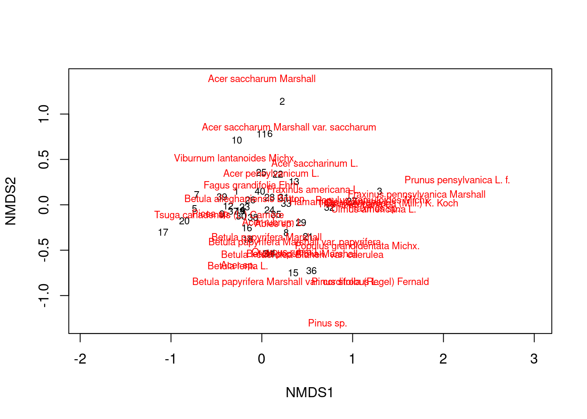
You can see that some communities are more similar than others, and some species tend to occur together.
We can try to redraw the NMDS plot using ggplot. This gives you more control on the graph elements.
df_nmds_comm <- mds_comm %>%
vegan::scores(display = "sites") %>%
data.frame() %>%
bind_cols(df_comm %>%
select(plotID, plotType, nlcdClass))
df_nmds_sp <- mds_comm %>%
vegan::scores(display = "species") %>%
data.frame() %>%
rownames_to_column(var = "species")
ggplot(df_nmds_comm, aes(x = NMDS1, y = NMDS2)) +
geom_point() +
ggrepel::geom_text_repel(data = df_nmds_sp, aes(NMDS1, NMDS2, label = species), color = "dark grey") +
ggthemes::theme_few()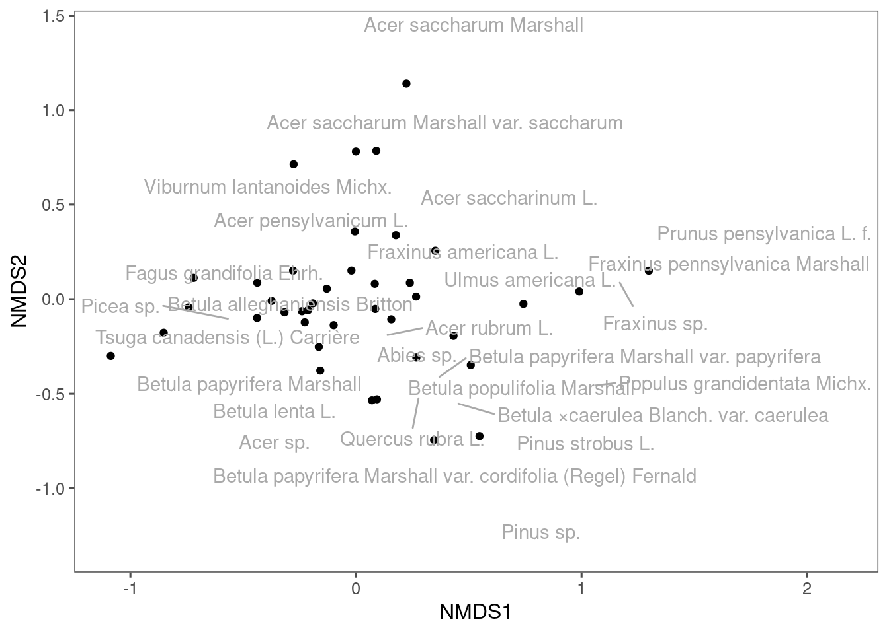
We ca draw ellipses based on existing grouping of these communities. In experiment, we can draw ellipses for control and treatment. In observations, we can draw ellipses for different time points. Here, I draw ellipses for communities from different land cover types.
ggplot(df_nmds_comm, aes(x = NMDS1, y = NMDS2, col = nlcdClass)) +
geom_point() +
stat_ellipse() +
ggrepel::geom_text_repel(data = df_nmds_sp, aes(NMDS1, NMDS2, label = species), color = "dark grey") +
ggthemes::theme_few() +
coord_equal()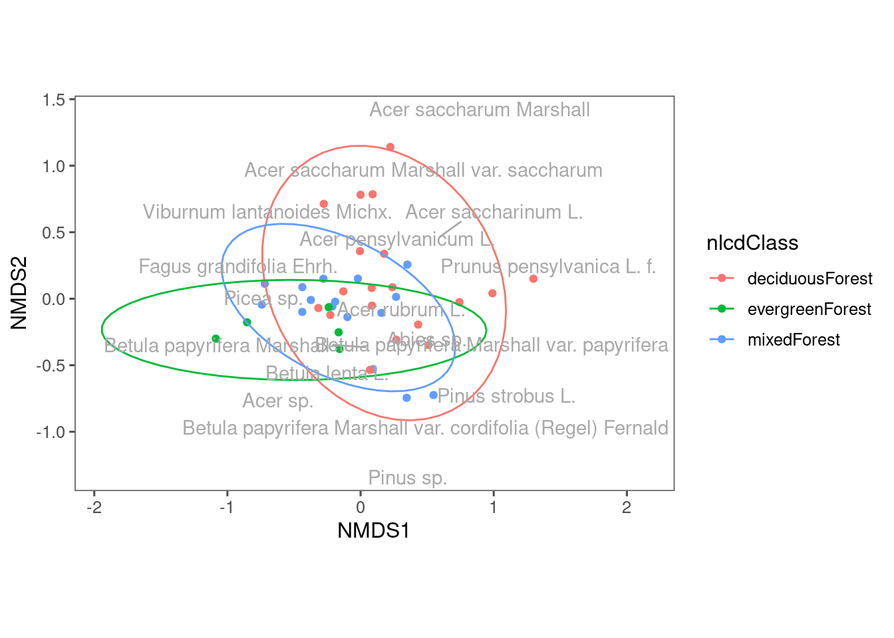
You can see some differences in the composition of communities from different land cover types. Note that we used the first two axes of NMDS. What if we use another two axes?
ggplot(df_nmds_comm, aes(x = NMDS3, y = NMDS4, col = nlcdClass)) +
geom_point() +
stat_ellipse() +
ggrepel::geom_text_repel(data = df_nmds_sp, aes(NMDS1, NMDS2, label = species), color = "dark grey") +
ggthemes::theme_few() +
coord_equal()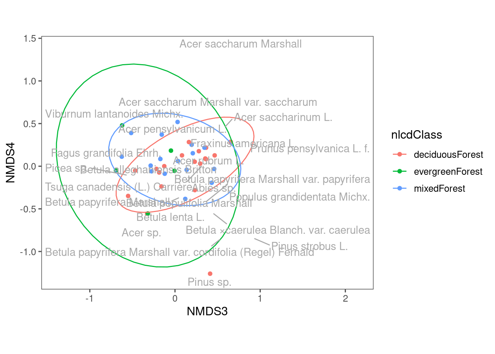
We still see some differences using NMDS3 and NMDS4, but perhaps less distinct compared to when we used NMDS1 and NMDS2.
NEON has two types of plots, distributed and tower. Their sampling methods differ. Let’s see their difference.
ggplot(df_nmds_comm, aes(x = NMDS1, y = NMDS2, col = plotType)) +
geom_point() +
stat_ellipse() +
ggrepel::geom_text_repel(data = df_nmds_sp, aes(NMDS1, NMDS2, label = species), color = "dark grey") +
ggthemes::theme_few() +
coord_equal()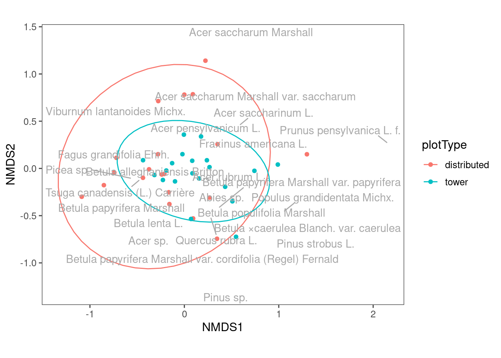
Communities from distributed plots seem to be more dispersed? The reason might be tower plots have a more constrained sampling area.
PERMANOVA
We have done some visualization that hopefully help us intuitively see the similarity and differences between groups of samples. What if we are asked to statistically quantify the differences between these groups? How can we get a p value?
Permutational multivariate analysis of variance (PERMANOVA) is a nonparametric multivariate statistical permutation test. * A significant p value indicates that the two groups are different in the their centroids OR dispersion in the multidimensional space. * It is similar to ANOVA, but it does not have many assumptions except exchangeability (usually satisfied).
(The two case studies we introduced both used PERMANOVA.)
In practice, we can easily use the adonis2 function from the vegan package.
set.seed(1)
res_permanova <- vegan::adonis2(mat_comm ~ nlcdClass, data = df_comm, permutations = 9999)
res_permanovaPermutation test for adonis under reduced model
Permutation: free
Number of permutations: 9999
vegan::adonis2(formula = mat_comm ~ nlcdClass, data = df_comm, permutations = 9999)
Df SumOfSqs R2 F Pr(>F)
Model 2 2.1141 0.31126 8.3605 1e-04 ***
Residual 37 4.6781 0.68874
Total 39 6.7922 1.00000
---
Signif. codes: 0 '***' 0.001 '**' 0.01 '*' 0.05 '.' 0.1 ' ' 1set.seed(1)
res_permanova <- vegan::adonis2(mat_comm ~ plotType, data = df_comm, permutations = 9999)
res_permanovaPermutation test for adonis under reduced model
Permutation: free
Number of permutations: 9999
vegan::adonis2(formula = mat_comm ~ plotType, data = df_comm, permutations = 9999)
Df SumOfSqs R2 F Pr(>F)
Model 1 1.0483 0.15434 6.9352 6e-04 ***
Residual 38 5.7439 0.84566
Total 39 6.7922 1.00000
---
Signif. codes: 0 '***' 0.001 '**' 0.01 '*' 0.05 '.' 0.1 ' ' 1set.seed(1)
res_permanova <- vegan::adonis2(mat_comm ~ nlcdClass * plotType, data = df_comm, permutations = 9999)
res_permanovaPermutation test for adonis under reduced model
Permutation: free
Number of permutations: 9999
vegan::adonis2(formula = mat_comm ~ nlcdClass * plotType, data = df_comm, permutations = 9999)
Df SumOfSqs R2 F Pr(>F)
Model 4 3.1207 0.45946 7.4374 1e-04 ***
Residual 35 3.6715 0.54054
Total 39 6.7922 1.00000
---
Signif. codes: 0 '***' 0.001 '**' 0.01 '*' 0.05 '.' 0.1 ' ' 1Can you try to interpret the results of these three PERMANOVA test that correspond to the three NMDS plots above? Are the differences that we observed from NMDS plots statistically significant?